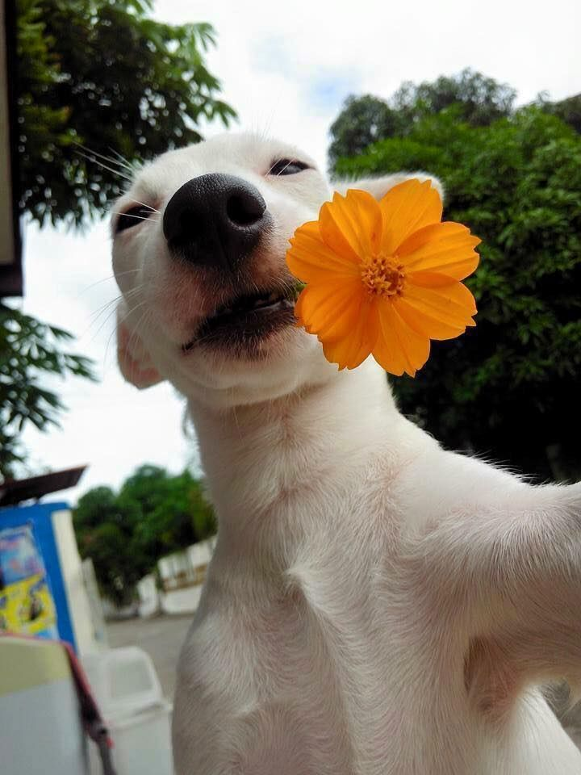
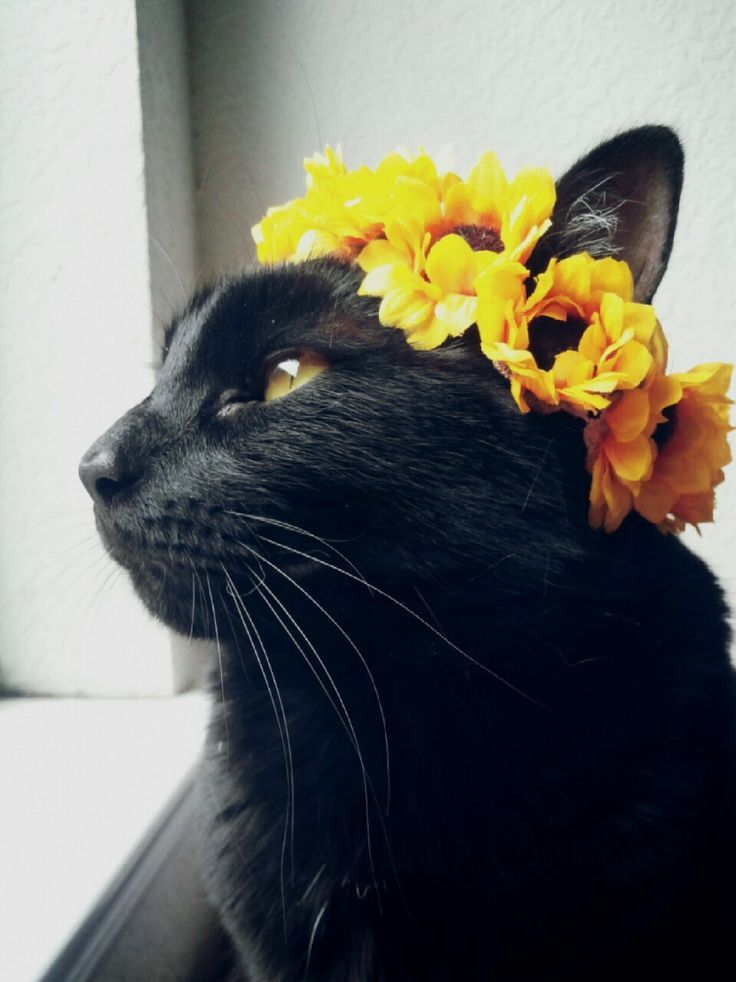

Cadastre o seu pet perdido que ajudaremos a encontrá-lo
No "Patas Amigas", oferecemos ajuda para encontrar animais perdidos e reuní-los com seus donos...
Divulgar Pet PedidoAdote um Amigo Peludo
Aqui no "Patas Amigas", acreditamos que todos os animais merecem uma segunda chance...


Ver Cães Disponíveis
Ver Gatos Disponíveis
Adoção Responsável
Aqui, no "Patas Amigas", a adoção responsável é uma prioridade...
- Compromisso
- Espaço
- Necessidades
- Tempo
- Finanças
Processo de Adoção
- Entre em contato conosco. Clique aqui <3.
- Avaliação
- Conheça os animais
- Processo de adoção
- Acompanhamento pós-adoção
Ajude-nos a fazer a diferença
Além da adoção, há outras maneiras de apoiar nosso trabalho...
Faça uma Doação Seja um Voluntário